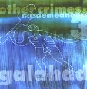

| Artist: | Galahad |
| Title: | Other Crimes And Misdemeanors III |
| Label: | Avalon GHCD7 |
| Length(s): | 70 minutes |
| Year(s) of release: | 2001 |
| Month of review: | [02/2002] |
| 1) | Aries | 10.25 |
| 2) | The Chase | 4.18 |
| 3) | Learning Curve (live & Learn Part Two) | 4.26 |
| 4) | Face To The Sun (live) | 6.11 |
| 5) | One For The Record (live) | 4.53 |
| 6) | Room 801 (live) | 7.19 |
| 7) | Exorcising Demons (live) | 9.36 |
| 8) | The Ceiling Speaks | 6.08 |
| 9) | Lady Fantasy | 11.40 |
| 10) | The Chamber Of 32 Doors | 5.21 |
The Chase is better, mysterious and featuring a lot of keys. The singing is better on this one and features Marillion as the main influence. The band is not simply following in the footsteps though: the Galahad sound is also much present already. An instrumental track with playful melodic piano rounds off the EP. This is really a nice one: the drive of the rhythm guitar and the melody of the piano combined. A vague echo of Twelfht Night can be heard, but it is least epigonistic of the tracks so far. Good one.
The next three tracks are BBC live tracks. The first of these Face Of The Sun, which is a rather catchy tune. It starts out as a ballad however with Nicholson's rather high voice (one which easily stands up during a live concert). The drums sound a bit lame on this one, the melody is recognizably Galahad, the guitars alternate between rhythmic and high pitched but melodious. One For The Record opens with symphonic strings (but synthetic of course) and the Twelfth Night influenced bass playing. Again, the song is quite poppy with distinctive vocal melodies, but lame drumming again. On the whole the song lacks the live power that Galahad ordinarily does have. At the end the tempo is upped.
Room 801 opens slowly. One might be thinking of the percussive/World music side of Gabriel here. This is one of more known Galahad tracks with strong chords on guitar and the ever recognizable vocals of Nicholson.
Session Three consists of a single song: Exorcising Demons. After a dark melodious opening the music gains more force along the way with good varied drumming. Some of the parts do sound a bit familiar, but on the whole this is the most appealing track I have come across here. The song itself would have been included on the Classic Rock Live album, but was dropped due to lack of space (I can not understand them dropping this in favour of anything). Two other tracks of that were left out, shall appear on a later rest of.
The three covers all have been reviewed on these pages. The Ceiling Speaks of Twelfth Night is one in which the band feels easily at home. It seems to me they must have played it in their earlier days at concerts and in their practising space. Lady Fantasy and The Chamber Of 32 Doors add little to the originals.